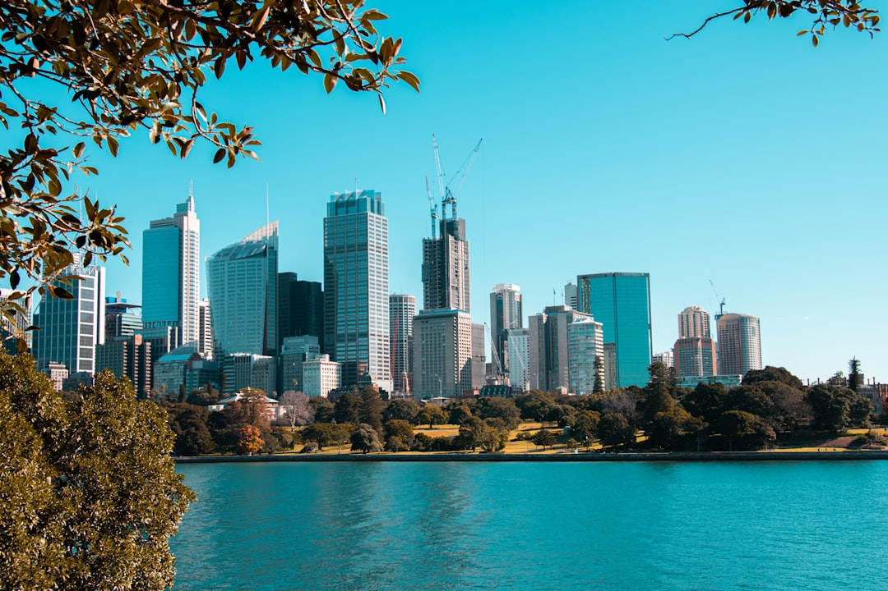

For Sydney owners weighing tree removal sydney options, the practical task is to confirm whether the job is removal, selective pruning or a report, then price the access, compliance checks and disposal before any work is approved.
Tree Removal Sydney Explained
Sydney Tree Services puts the pricing question in the right order. Before anyone talks numbers, the job needs to be scoped around the tree itself, the access, any council requirements and the outcome you want. That is why a small, accessible job sits at the low end of the range, while a large tree near buildings or power lines can move well beyond it.
The source page gives a 2026 residential guide of about $800 for a small, accessible tree and $6,000 or more for a large one near structures or power lines. It also says the final price depends on tree size, species, access and whether stump grinding is included. A written fixed price quote is more useful than a rough verbal estimate because it can spell out scope, timing and disposal.
- Ask whether stump grinding is included or priced separately.
- Confirm how access affects equipment, rigging and clean-up.
- Check that disposal details appear on the written quote.
Council permission and pruning standards
Approval is not a side issue. The source material says many Sydney councils require a permit or development consent to remove or heavily prune protected trees under a Tree Preservation Order or Development Control Plan. It also notes that rules vary by local government area and often use DBH thresholds or protected species lists, so the useful next step is to check the specific council before approving work.
This matters even when the tree stays on site. The same source distinguishes selective pruning carried out to Australian Standard AS 4373 from indiscriminate cutting. If the goal is clearance, shape management or risk reduction rather than full removal, the standard gives you a better basis for asking how the canopy will be cut and what outcome is intended.
- Check whether the tree is protected before booking removal.
- Ask whether the proposed pruning is being described as selective work to AS 4373.
- If consent is needed, confirm whether an arborist report is part of the pathway.
Removal, pruning or an arborist report
A lot of confusion disappears once the job type is named properly. The source page lists removals, pruning, stump grinding and arborist reports, and says reports may be used for council, risk and development matters. That means the right first question is not simply how much it costs, but what problem has to be solved on the property.
If the concern is a single hazardous limb, selective pruning may be the real job. If the tree has to come out entirely, removal and disposal become the main scope items. If the issue is approval, a neighbour dispute, development planning or documenting condition, an arborist report can be the step that clarifies what work is justified before saws or machinery are booked.
The source also draws a line between a qualified arborist and the older idea of tree lopping. It describes arborists as practitioners who understand tree biology, risk and safe work practices, while indiscriminate cutting is discouraged by modern arboriculture standards.
Power lines, access and site constraints
Some jobs become complex because of location rather than size. The source page says tree work near power lines in NSW must follow SafeWork NSW requirements and the relevant electricity network distributor minimum approach distances. It also states that only trained, authorised operators may work closer than the prescribed distance. That is not a detail to raise halfway through the visit, it should be disclosed in the first enquiry.
Access constraints are just as important. The same page says projects are scoped around access before the site visit is arranged. In practice, that affects how limbs are handled, whether modern rigging is needed, how material is removed and how long the crew needs on site. Large trees beside buildings and narrow entries are therefore cost signals even before a written quote arrives.
- Tell the contractor if the tree is near power lines.
- Describe nearby buildings, fences and narrow access points.
- Ask how disposal and site clean-up will be handled.
Who this applies to and what to prepare
This guide is most useful for owners deciding between a straightforward residential removal, a pruning job that should be specified properly, a stump grinding add-on, or a report needed for council, development or risk documentation. It also helps when the main uncertainty is not the tree itself but the site conditions, such as limited access or overhead services.
Prepare the enquiry with the same details the source page asks for: what needs to happen, your suburb or postcode, and a clear description of the tree project. Then use the written quote to test whether the scope is complete. A good quote should reflect timing, disposal details and the exact service being supplied, not just a lump sum.
- Describe the tree and the desired outcome.
- Flag any permit or Tree Preservation Order question early.
- Note access limits, nearby buildings and power lines.
- Compare written scope, timing and disposal details before approving work.
- Define the job. Decide whether you are dealing with removal, selective pruning, stump grinding or an arborist report before you ask for pricing.
- Check approval needs. Ask your council whether the tree is covered by a Tree Preservation Order, Development Control Plan or other consent requirement.
- Disclose site constraints. Tell the contractor about power lines, nearby buildings, narrow access and any disposal expectations in the first enquiry.
- Review the written quote. Approve work only after the quote sets out scope, timing and disposal details in writing.
| If your issue is | Best first service | What to confirm on the quote |
|---|---|---|
| The whole tree needs to come out | Removal | Access, disposal, whether stump grinding is included |
| You need clearance or selective canopy work | Pruning | That the work is described to AS 4373 and matches the intended outcome |
| Council, development or documented condition is the issue | Arborist report | What the report is for and whether further approval steps are expected |
This guide covers quote drivers, permission checks, service choice and site constraints for Sydney tree work.